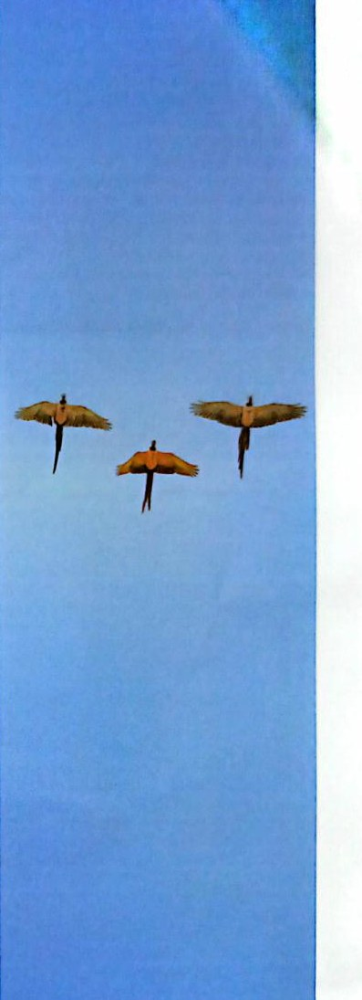
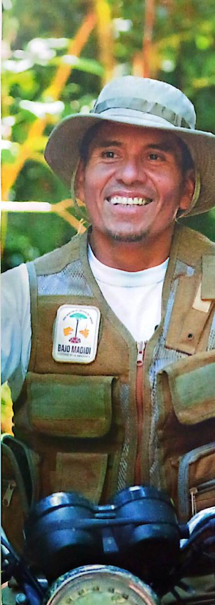
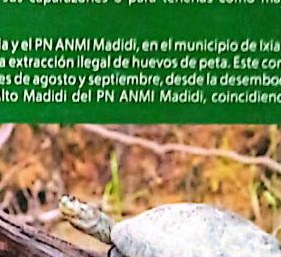

Visual
Imágenes usadas en la web
No son páginas escaneadas completas. Son recortes de fotografías del documento, usados solo como apoyo visual.









Recortes fotográficos seleccionados del PDF, sin páginas completas ni texto escaneado.
No son páginas escaneadas completas. Son recortes de fotografías del documento, usados solo como apoyo visual.


